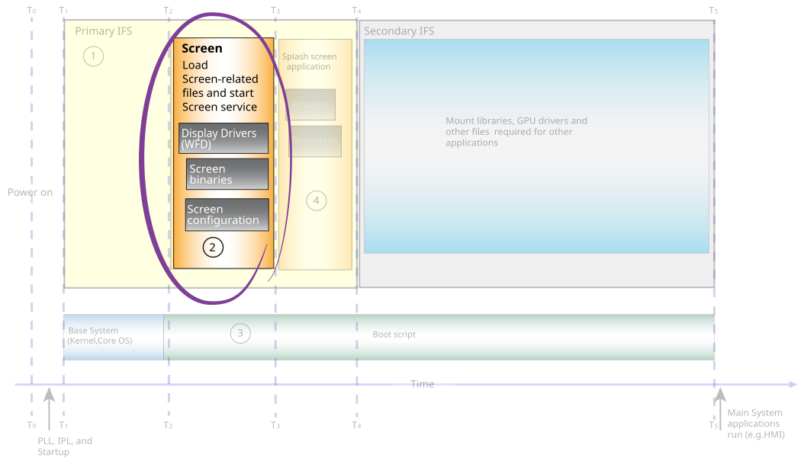

The graphics.conf file is a Screen configuration file that you can optimize to help reduce the time it takes for the Screen service to start.

Configure display optionsin this chapter.
Screen is designed to be flexible and fault-tolerant. For this reason, by default, Screen scans the hardware to determine the best settings for the display, which requires extra time. When possible, configure the pixel format in the graphics.conf file to skip the scanning process and save time–provided you know the correct settings on the display or monitor.
To configure the pixel format, modify the following option in the display section of the graphics.conf file:
For more information about the display parameters, see the
Configure display subsection
in the Configuring Screen
chapter of the Screen Developer's Guide.
Your configuration file can be optimized to exclude sections that don't apply to your system and to the applications running on your system. There are sections of the graphics.conf file that are related to display drivers, libraries, and physical displays. If your system doesn't support displays, or if there aren't any applications that use displays on your system, then you should exclude the following sections from your graphics.conf:
Configure wfd device subsectionin the
Configuring Screenchapter of the Screen Developer's Guide.
Configure display subsectionin the
Configuring Screenchapter of the Screen Developer's Guide.
Configure class subsectionin the
Configuring Screenchapter of the Screen Developer's Guide.
The default-display parameter that's specified in the globals section, of graphics.conf isn't valid if your system doesn't support displays.
Your configuration file can be optimized to exclude sections that don't apply to your system, and to the applications running on your system. There's a section of the graphics.conf file that's related to GPU drivers and libraries. If your system doesn't have a GPU, or if there aren't any applications that use the graphics drivers on your system, then you should exclude the following from your graphics.conf:
Configure egl display subsectionin the
Configuring Screenchapter of the Screen Developer's Guide.